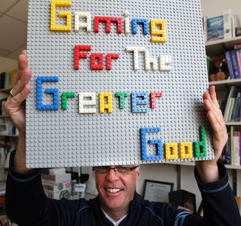
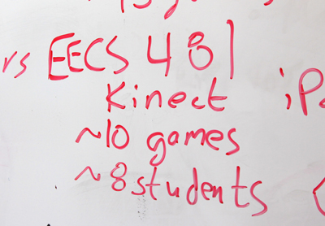
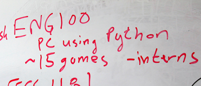
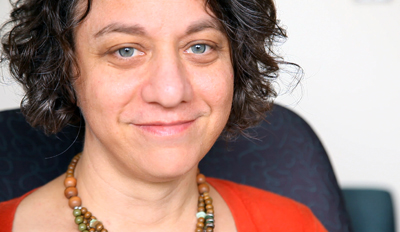
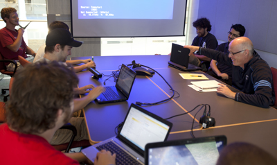
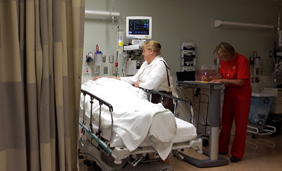
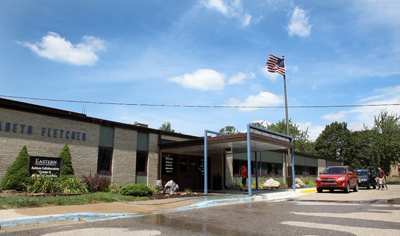
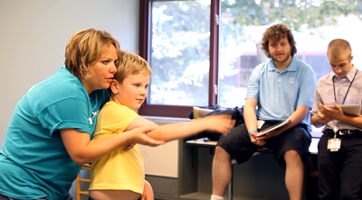
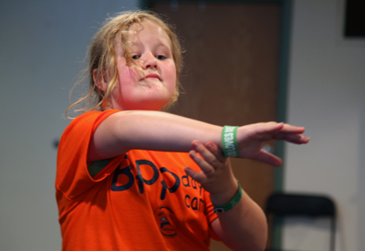

Computer science instructor who refocused his classes to make games and other software that could help those with special needs.
Software Engineering: a senior-level design course with 50 students.
Gaming for the Greater Good: a section of a required freshman course with 60 students.
Executive director of infrastructure & system operations at U-M Health System. About a decade ago, Kryza noticed a need for lower-cost technologies for children with special needs. Several years ago, he reached out to Computer Science and Engineering for ideas. He found a collaborator in David Chesney.
U-M assistant professor of rehabilitation psychology and neuropsychology who came to talk to Chesney's classes about autism and continues to work on moving the project forward.
U-M associate professor of physical medicine & rehabilitation at the Medical School who is working with Chesney to find applications for the students' games.
Donated 6 Kinects and 2 Xbox 360s. Learned of the efforts through Joe Kryza.
Chief digital marketing officer for Autism Speaks. A former Microsoft employee who heard of the effort through contacts there. Sirkin flew to Ann Arbor to see the class' final presentations and blogged about it.
Sirkin has been a tireless advocate and recently featured the games at NYC Maker Faire.
Two students from the freshman class and six from the software engineering class worked over the summer to advance the Path and Jump Rope games toward releasable products.
A nonprofit volunteer organization that helps patients and families stay connected to life outside the hospital during their hospital stay. Freshman Connor Davidson and Patrick Godwin interned there over the summer and helped to install games from both classes into patient rooms and rehab clinics in the Health System. Joe Kryza is also affiliated with this group.
Invited U-M students to bring the games so that patients could try them out and give feedback.
Mentor Norm Rapino provided help getting patents and advice on how to patent and commercialize Path and Jump Rope.
With assistance from Betty Lou Rowe, director of the summer program at the center, U-M students let autistic children play the games.
About one in 88 children in the U.S. is autistic, according to the Centers for Disease Control and Prevention. Michigan Engineering students developed video games that could help them with social interaction and concentration amid distractions.
About one in every 1,500 children in the U.S. has this disorder, which is caused by trauma to the nerves between the neck and an arm during childbirth. Michigan Engineering students developed video games that could potentially improve their therapy.
Use a spacebar or arrow keys to navigate